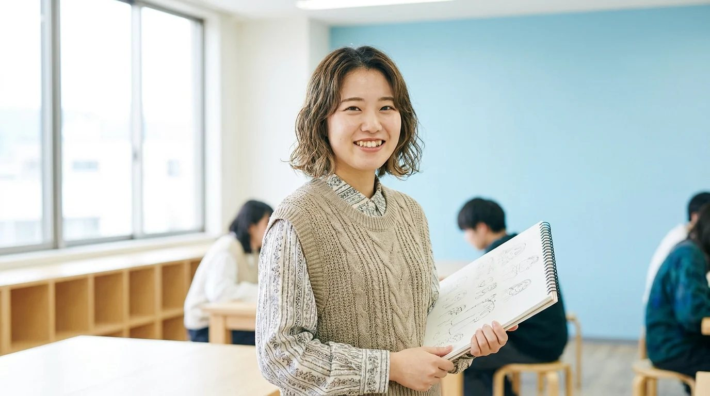

「好き」が、ここから未来になる。
校舎も、仲間も、毎日も、ぜんぶがはじまり。あなたの「やってみたい」を、ひとりひとりに寄りそって応援する学校です。
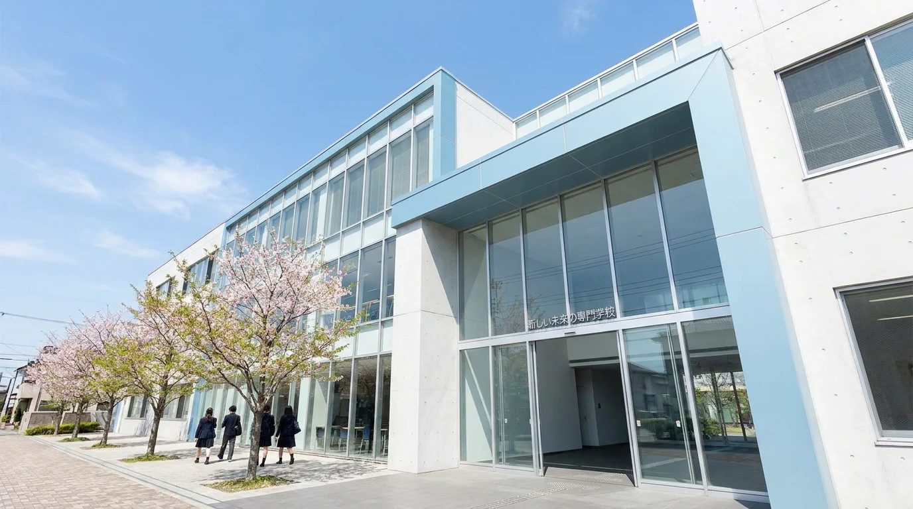
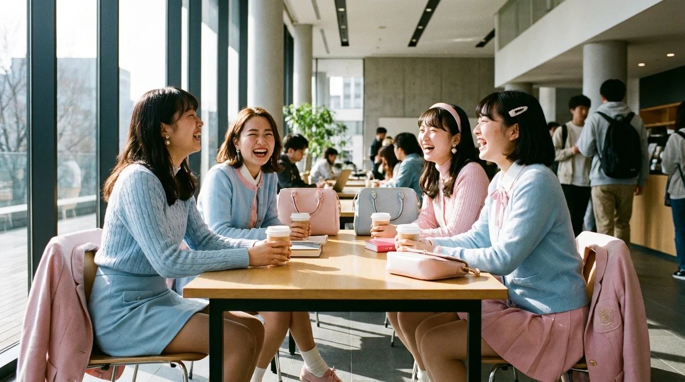
SCHOOL
OPEN
まだ誰も歩いていない学校を、
いっしょにつくろう。
先輩がいない。決まった色もない。だからこそ、あなたの「好き」や「こうしたい」が、そのまま学校の文化になっていきます。
この学校は、好きなことを仕事にしたい人が、迷わず一歩をふみ出せる場所をつくるために生まれました。はじめての人も、ゼロからでも大丈夫。学ぶ楽しさと、続ける力を、ここで育てていきましょう。
この学校の3つの特長
はじめてでも、安心して夢中になれる理由があります。

現場に近い、実践の授業
教科書だけで終わらせず、手を動かして身につける授業が中心。「できた！」をたくさん重ねて、自信につなげます。

ひとりにしない担任制
入学から就職まで、ひとりひとりに担任がつきます。勉強のことも、毎日のちょっとした悩みも、気軽に話せる距離で見守ります。
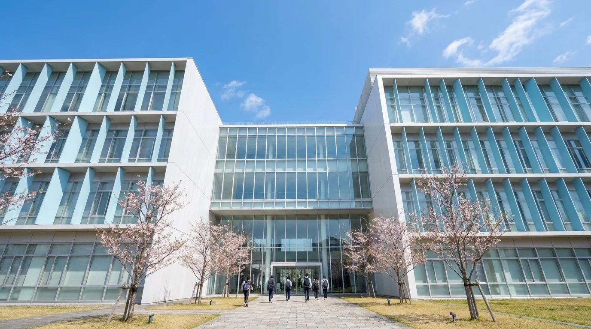
まっさらな新しい校舎
明るい教室、のびのび使える実習室。毎日通うのが楽しみになる、新しい学びの場所でスタートできます。
学生生活のイメージ
授業も、友だちとの時間も、ぜんぶが大切な思い出に。
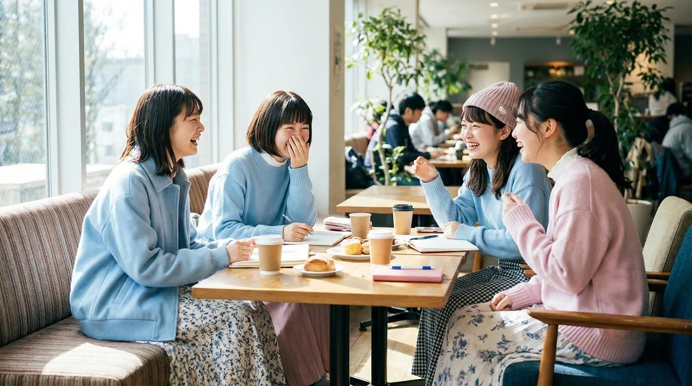
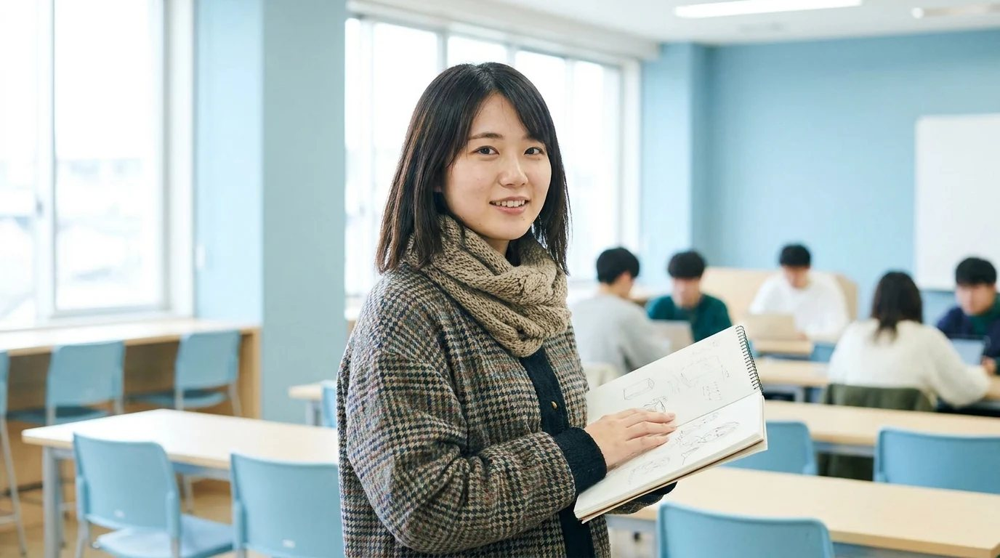
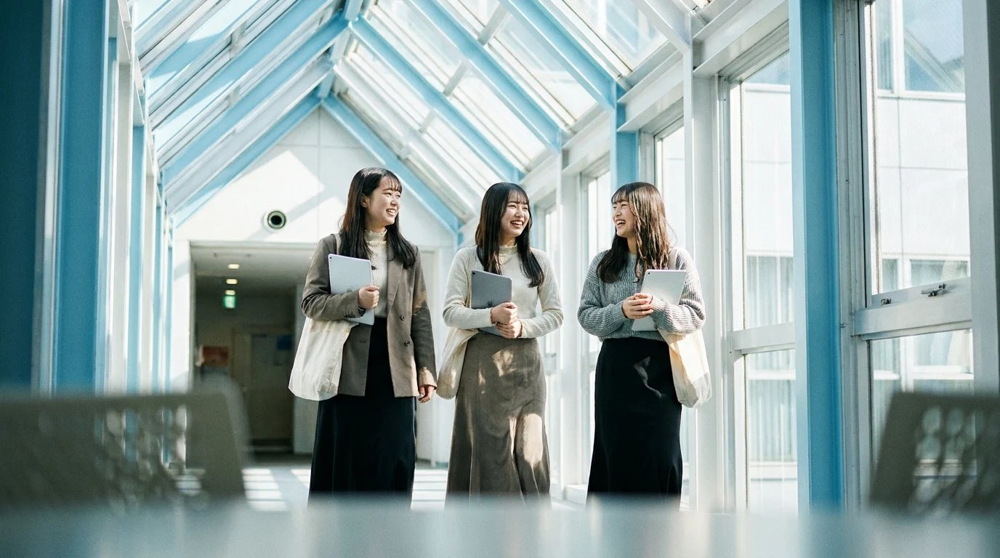

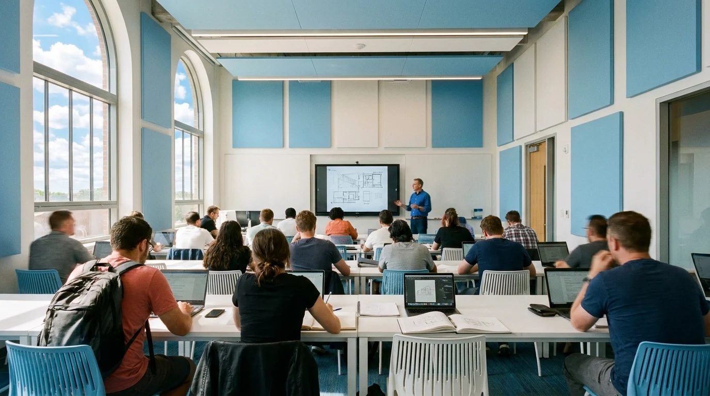
ある1日の流れ
- MORNINGホームルーム今日の目標を担任と確認
- AM基礎の授業わからないところは、その場で質問
- LUNCHお昼休み友だちとランチ。おしゃべりも大事な時間
- PM実習手を動かして身につける
- AFTER放課後自主練習や、作品づくりの相談も
1年のイベント
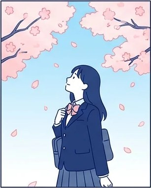
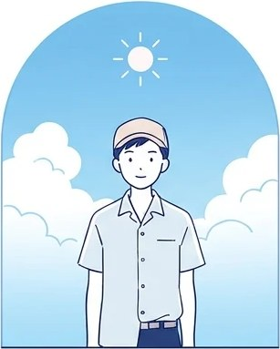
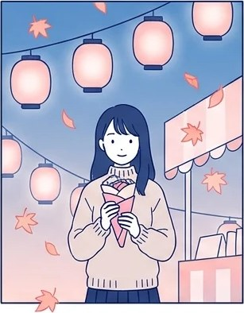
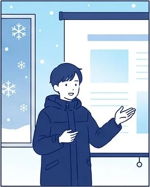
就職・資格のサポート
「卒業してから」まで、いっしょに考えます。
入学した日から、
就職の準備ははじまっています。
担任と就職の担当が、ひとりひとりの希望にあわせて準備を進めます。めざす資格も、対策の授業と個別フォローで合格まで伴走します。
- 入学・目標づくり
- 基礎を学ぶ・資格対策
- 実習・作品づくり
- 自己分析・面接練習
- 卒業・就職
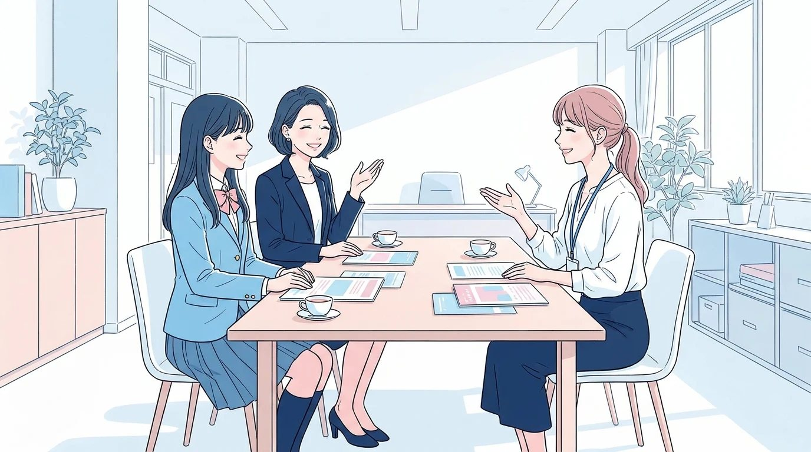
保護者の方へ
新しい学校だからこそ、安心して送り出していただけるよう、学費・通学・就職のことを、わかりやすくご説明します。オープンキャンパスでは、保護者の方からのご相談もお受けしています。
よくある質問
Qまったくの初心者でも大丈夫ですか？
はい、大丈夫です。基礎から順番に学ぶので、はじめての人でも安心してスタートできます。
Q新しい学校なので、先輩がいないのが不安です。
担任がひとりひとりにつき、学校生活のことも気軽に相談できます。みんなが1期生なので、仲間づくりもしやすい環境です。
Q学費の支払い方法や奨学金について知りたいです。
資料やオープンキャンパスで、学費の内訳と使える制度をくわしくご案内しています。個別の相談もできます。
Qオープンキャンパスには何を持っていけばいいですか？
筆記用具があれば大丈夫です。服装も自由なので、リラックスして来てください。
まずは、話を
聞きにきてね。
学校のこと、学科のこと、学費や就職のこと。気になることは、なんでも聞いてください。